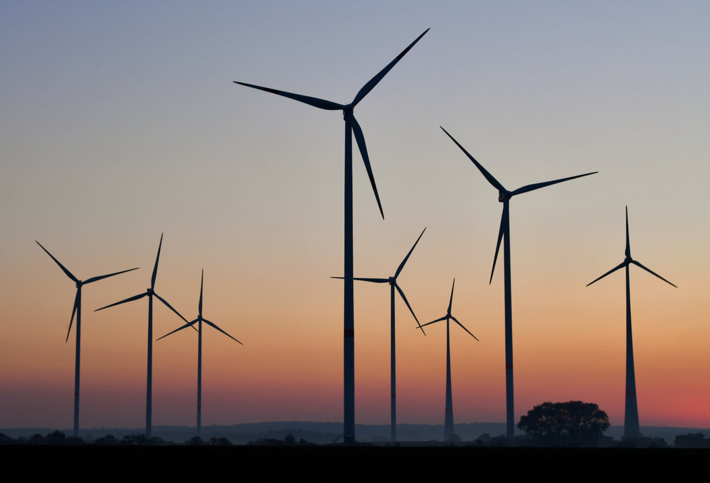

Paises que implementan la Energia Eólica

CHILE
La industria Minera por la Energía Eólica
Las empresas mineras se han tomado bastante en serio el compromiso del gobierno por
reducir un 20% las emisiones de efecto invernadero (GEI) hacia 2020, relacionado
directamente a la meta energética del 20/20 también. En este contexto fue que el
vicepresidente de Asuntos Corporativos de Barrick Gold, Rodrigo Rivas, explicó que su
proyecto eólico Punta Colorada -de 70 millones de dólares, con 18 aerogeneradores, que
generarán 36 MW para el SIC- pretende el mismo objetivo, y señaló que, “si bien por el
momento no tenemos otros proyectos de esta magnitud en desarrollo, estamos en una
constante búsqueda de alternativas y proyectos que sean amigables con el medio ambiente en
nuestras operaciones”. En esa línea, Francisco Veloso de AMSA, anticipó que durante 2011
realizarán “un estudio del efecto potencial del cambio climático en sus operaciones y
desarrollarán una política de cambio climático (…)”. Además, están evaluando diversas
alternativas de energías renovables alternativas para incrementar la proporción de ellas en su
suministro de energía, indicó.
HONDURAS
Proyecto Cerro de Hula en plena construcción La generación anual esperada es de 360 GWh de
energía limpia a partir de los fuertes vientos que soplan en el Cerro de Hula. Este proyecto es
desarrollado por la empresa privada, con el apoyo del Gobierno de Estados Unidos. Las
características, descripción y técnicas, de esta experiencia piloto y el aporte que los proyectos
de energías renovables pueden dar al desarrollo local, comunitario y nacional en Honduras,
fueron tema central en este evento promovido por el Programa de las Naciones Unidas para el
Desarrollo (PNUD) y la Empresa Energía Eólica de Honduras. La idea del evento es que tanto
las alcaldías, la sociedad civil en general y la empresa privada, conozcan cómo funciona el
proyecto y cuáles son los beneficios de este tipo de energía limpia, que además de contribuir a
proteger el ambiente, reduce la factura petrolera al disminuir el consumo de combustible fósil
y las localidades reciben apoyo para determinados proyectos comunitarios. El tema tiene
marcada importancia porque una vez conocida esta experiencia, puede ser replicada en otras
comunidades, interesadas en reducir el alto costo de la energía que afecta la economía
nacional y familiar. El representante de la Empresa Energía Eólica de Honduras, Leonel Umaña,
explicó que este proyecto se viene planificando desde 1996, haciendo estudios aéreos y
terrestres. El año pasado ya se comenzó a trabajar con maquinaria y en abril de este año
llegarán las turbinas para empezar a funcionar en el primer trimestre de 2012.
URUGUAY
Abengoa a construir un parque de 50 MW
La Administración Nacional de Usinas y Trasmisiones Eléctricas (UTE) de Uruguay ha
adjudicado a Abengoa la construcción, la operación y el mantenimiento, durante 20 años, de
un parque eólico con una potencia instalada de 50 MW, que se ubicará en la localidad
uruguaya de Peralta, en Tacuarembó. Este proyecto ahorra emisiones de 100.000 toneladas de
CO2 a la atmósfera cada año. El parque, que tendrá 25 aerogeneradores, deberá estar en
funcionamiento en un plazo máximo de tres años, según los tiempos del proceso de licitación
y de adjudicación de UTE. Abengoa operará el parque eólico durante 20 años, bajo un modelo
de concesión que además determina un precio fijo asegurado por cada MWh de electricidad
generada.
Los proyectos eólicos convirtiéndose en realidades En la sesión del viernes 11 de marzo, el
directorio de UTE resolvió adjudicar a las empresas Consorcio Venti, Fingano y Palmatir,
contratos por la compra de energía proveniente de parques de 50 MW cada uno. Estas
adjudicaciones surgen de un procedimiento competitivo, que se origina en los lineamientos
fijados por el Poder Ejecutivo en el Decreto 403/009, y se inicia con la publicación de los pliegos
para la compra directa, el 18 de febrero de 2010. Luego de finalizar este procedimiento de
selección, se adjudicó la compra. Las empresas se comprometen a comenzar a generar la
energía proveniente de estos parques en un plazo no mayor a tres años a partir de la firma del
contrato. Los documentos asociados a la etapa de adjudicación recientemente finalizada,
serán publicados por UTE, y se podrán consultar a través de la sección noticias de su sitio web
(www.ute.com.uy). El que acaba de culminar es el mayor procedimiento de compra de energía
a privados en Uruguay, y marca un paso importante en el cumplimiento de las metas de la
Política Energética del país. Se incorpora generación eléctrica a partir de una fuente renovable
y autóctona, y se diversifica la matriz energética, tanto en fuentes como en generadores. Ya
fue anunciado un nuevo procedimiento competitivo para la compra de 150 MW adicionales de
energía eólica, que UTE promoverá en los próximos meses. La fecha estimada de recepción de
ofertas es fines de abril de 2011.
VENEZUELA
La energía eólica caminando
Los estudios determinan factibilidad del parque eólico en la Península de Macanao. La
promesa de instalar un parque eólico en el estado Nueva Esparta sigue en pie. En la
actualidad, los anemómetros instalados en el sector El Tunal de la Península de Macanao
siguen recabando información de la velocidad del viento. El alcalde del municipio, Miguel Ángel
Vásquez, indicó que los ensayos se deben desarrollar por un período de 18 meses. En junio
culminan las pruebas, sin embargo, Vásquez señaló que los registros arrojados por los equipos
instalados en el lugar llevan una constante de 30 kilómetros por hora. Esta velocidad es la ideal
para que las turbinas eólicas a instalar puedan proporcionar la energía suficiente para
abastecer a Macanao y aportar kilovatios al municipio Tubores. El año entrante, la Península
concretará el proyecto de generación de energías renovables sin emisiones de CO2. El capital
para la instauración del proyecto vendrá de la empresa estatal Petróleos de Venezuela.
CUBA
Las energías renovables en la vida diaria
El número de instalaciones que utilizan las energías renovables en Cuba asciende a 26.814, las
cuales produjeron en conjunto 178,1 GWh hasta finales de 2010. Según un reciente boletín de
Cubaenergía, perteneciente al Ministerio de la Industria Básica, la energía aportada
globalmente por esos medios permitió sustituir más de 45.000 toneladas de petróleo. Entre
esa cantidad de instalaciones destacan cuatro parques eólicos, con 20 aerogeneradores,
y 8.677 pequeñas turbinas eólicas. También funcionan en Cuba 9.964 paneles de energía solar
fotovoltaica, 554 centrales de biogás y más de 6.400 calentadores solares. Asimismo, se
utilizan en el país 173 instalaciones hidroeléctricas, 608 hornos de producción de ladrillos que
emplean biomasa forestal para aportar energía, 57 turbogeneradores y 67 calderas de
ingenios azucareros. La disponibilidad técnica de las unidades de fuentes renovable fue entre
un 87 y 93%. En 2010 el país logró su mayor volumen de generación de energía a partir del
uso de la fuerza de los vientos.
ARGENTINA
Nuevo proyecto en Neuquen
Tres empresas se propusieron para realizar evaluaciones técnicas en más de dos mil hectáreas
con el fin de desarrollar un parque de energía eólica en Neuquén. Las ofertas fueron
presentadas por las empresas Abo Wind, CEO e Ingeniería SIMA. Se trata de 2.637 hectáreas
distribuidas en tres áreas cercanas a la ruta provincial siete. El gobierno neuquino anunció que
las evaluaciones consistirán en mediciones del recurso eólico en tierras privadas en la zona de
Chañar Norte. La primera cotizó 4.125 dólares por MW de potencia instalada; la segunda 5.100
para las áreas I y III; y la restante, 4.850 dólares para el área II respectivamente. La comisión
técnica del gobierno estudiará las ofertas y analizará la documentación presentada para
definir que empresa será la que resulte adjudicataria del proyecto. Los propietarios de las
tierras donde se realizará la campaña de medición delegaron en la Agencia para la Promoción
y Desarrollo de Inversiones del Neuquén (ADI-NQN) facultades para su factibilidad. Culminado
el proceso de estudio del recurso eólico, el inversor tendrá el derecho a ejercer la opción de
instalar y explotar un parque eólico por el término de 30 años para la generación de energía
eólica, a través de las redes de transporte eléctrico existentes. El gobierno de la provincia licitó
un total de nueve áreas para estudiar en distintas zona de la provincia la potencia del viento
para de esa manera impulsar el desarrollo de energías alternativas en su territorio.
REPUBLICA DOMINICANA
Los proyectos eólicos muy cerca de empezar operaciones El presidente de la República,
doctor Leonel Fernández afirmó que el presente año marcará un hito en el sector energético
dominicano, tras indicar que se contará con la entrada en operación de tres parques eólicos.
Esos proyectos eólicos son el parque eólico Juancho-Los Cocos, de la empresa generadora de
Electricidad Haina, S.A., ubicado en Pedernales; el parque Guanillo, de la empresa Parques
Eólicos del Caribe, S.A., (Pecasa), en Montecristi; y el parque eólico Matafongo, del Grupo Eólico
Dominicano C. X A., ubicada en la provincia Peravia. En el área de transmisión eléctrica se ha
concluido la instalación de la autopista eléctrica que unirá al Norte y el Sur del país, lo que
ayudará a la reducción de las perdidas técnicas, que durante años ha sido uno de los puntos
débiles del sistema; en la actualidad se está operando con una línea de 138 kilovatios,
y para el mes de abril del presente año se operará a plenitud con otra de 345 kilovatios.
BRASIL
La comparación entre el potencial brasileño para la energía eólica (se habla en 300 mil MW) y
la cantidad de energía ya en operación o parques en construcción demuestra el vasto campo
de crecimiento en el país. La industria eólica en Brasil viene ganando impulso con el ingreso de
inversores novatos y con la instalación de fábricas multinacionales de equipos eólicos en el
país, haciendo con que se muevan decenas de mil millones de reales por año. En Nordeste
brasileño, hay 14 obras de parques en marcha en el Estado de Bahia con inversión de R$ 1,17
mil millones, y en Rio Grande do Norte se inauguró el Parque Alegria I, presupuestado en R$ 330 millones.
Otros cuatro parques, también en Rio Grande do Norte, suman R$ 400 millones
de inversión. En el Sur, en el Estado de Rio Grande do Sul, donde hay el parque eólico más
grande de Sudamérica, las obras que empezarán todavía en este semestre tendrán inversión
de R$ 800 millones. Desde 2009 el gobierno brasileño viene promoviendo subastas para
compraventa de energía eólica (la de 2011 está prevista para el fin del primer semestre) y por
si acaso se cumpla la expectativa de que subastas contraten 2 mil MW por año, la inversión
esperada sólo para la instalación de las usinas (o sea, sin contabilizar los recursos decurrentes
de instalaciones de fábricas, de la cadena de proveedores de componentes para las fábricas y
contratación de mano de obra) es de R$ 8 mil millones al año.